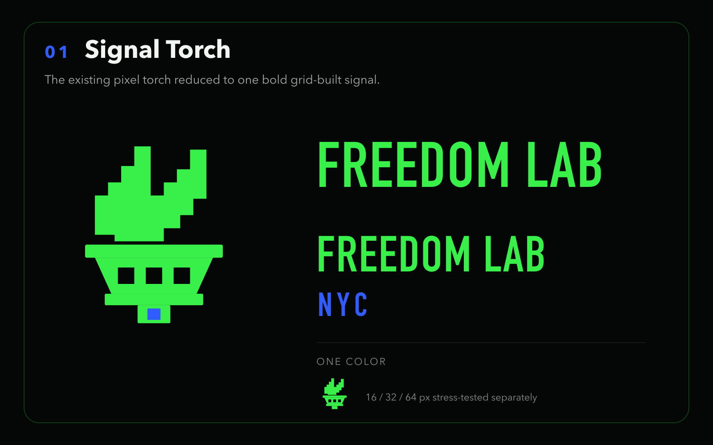
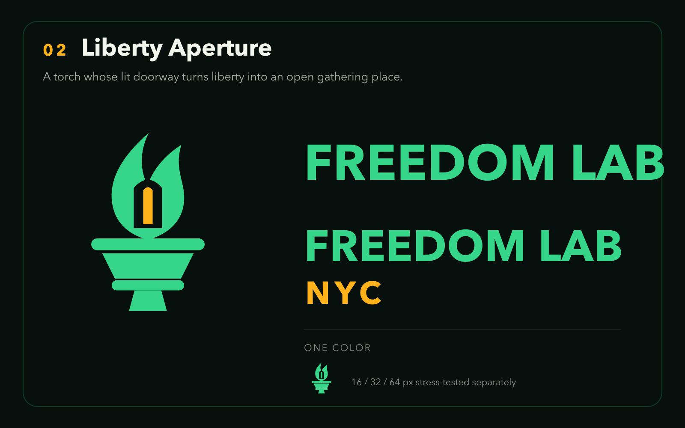
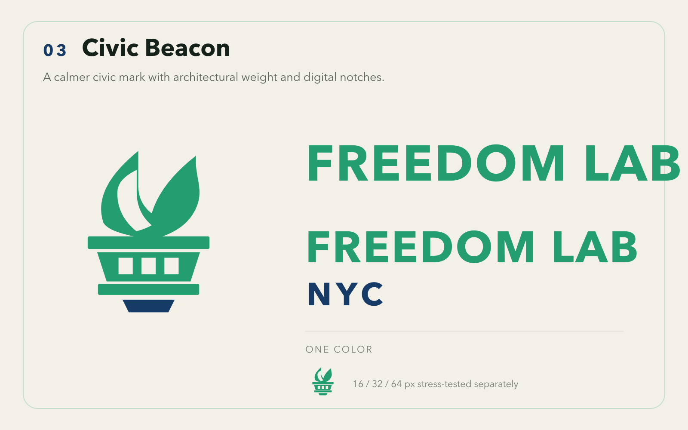
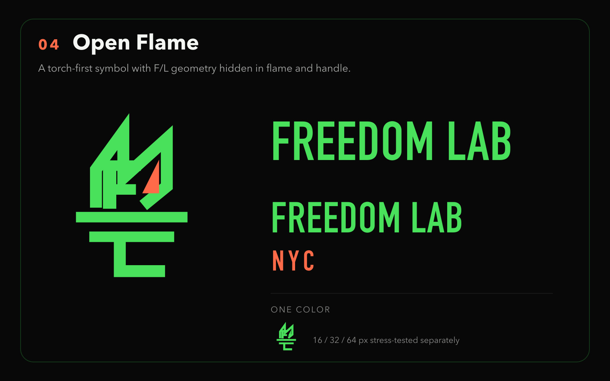
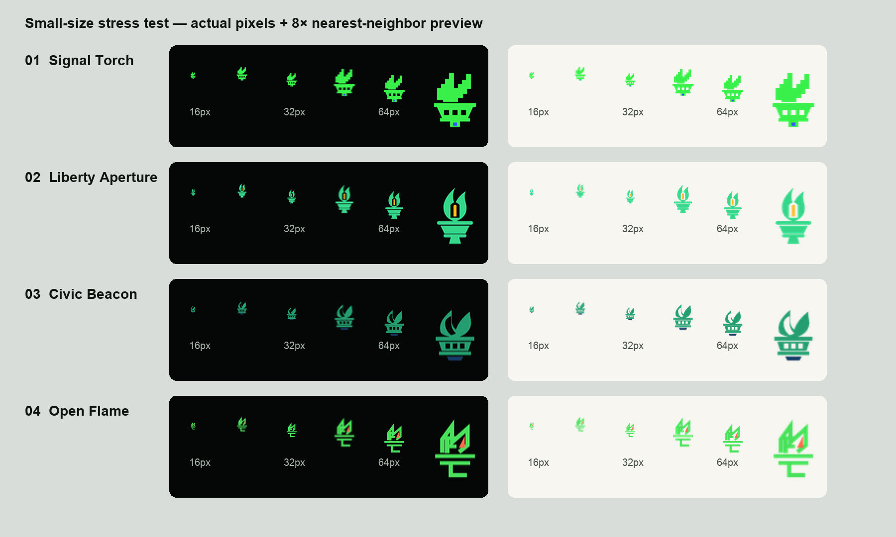

Freedom Lab logo options
Four vector-first directions built from the exact Drive assets and Allan Peters’ Logos That Last. Recommendation: Liberty Aperture.




Four vector-first directions built from the exact Drive assets and Allan Peters’ Logos That Last. Recommendation: Liberty Aperture.




